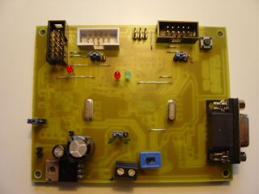
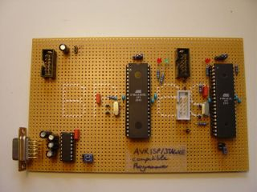
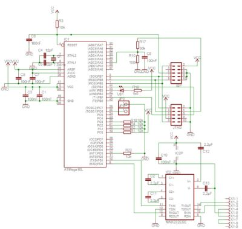
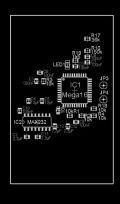
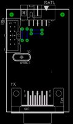

Evertool
Evertool is an AVRISP/STK500-protocol and JTAGICE compatible Programmer/JTAG debugger.
- ISP Programmer compatible with Atmel AVRISP, directly accessable with AVRStudio and avrdude
- JTAG debugger compatible with Atmel JTAGICE, directly accessable with AVRStudio and AVaRice
- Evertool supports all AVR devices Atmel supports with their AVRISP and JTAGICE.
- Easy update of the programmer for new target AVRs via RS232/serial port
- Rescue clock generaration to recover from wrong fuse-bit-settings
- Simple hardware, standard parts
Intro
The ATMEL AVRISP In-System Programmer is a small device to program ATMEL AVR microcontrollers.
The original ATMEL AVRISP device is described here.
To avoid misunderstandings: ATMEL's AVRISP is a "small STK500".
Evertool which emulates an AVRISP is not a "bit-bang-programmer" or an
AVR910-type-programmer. Evertool "talks" STK500-protocol on the
RS232-port since the STK500-firmware ATMEL delivers with the AVRStudio
is
used. From the programming interface the AVRISP is compatible with the
Atmel STK500 in low-voltage serial programming mode.
The ATMEL JTAGICE is a device to program and debug ATMEL AVR microcontrollers with JTAG-Interface (ATmega16, ATmega32,
ATmega64, ATmega128...) The ATMEL JTAGICE is described here.
This is a rebuild of both devices on a single board. The main
advantage of such a programmer is the
compatibility with the ATMEL AVRstudio since it uses the original ATMEL
firmware code supplied with AVRStudio on an ATmega16 (JTAG) and
ATmega8535 (ISP). So the front-end software (AVRStudio) and programmer
firmware are supported by the makers of the target-controllers and new
devices should be supported
as soon as a new AVRStudio gets released with the new firmware-files
for STK500/AVRISP or JTAGICE. With the AVRStudio AVRISP/STK500-plug-in
programming of flash, eeprom, fuse- and lockbits is an easy task. The
JTAG part of Evertool is compatible with AVRstudio's JTAGICE plug-in.
And yes, it is possible "to jtag" the AVR Butterfly with Evertool.
Before you start you may concider this:
- The original ATMEL AVRISP device is cheap (prices May 2004: ca. 40 EUR incl. Tax at www.reichelt.de,
ca. 26 EUR+TAX at de.digi-key.com). So if you don't need the JTAG-part this universal programmer may not be worth the effort.
- The presented device has no ESD-protection IC or level-shifters on board. Refer to the
schematic of the original ATMEL AVRISP device.
(Sorry, the schematic of the Atmel JTAGICE is not available here.) But since the AVR IO-pins have a rather good internal
protection this should not be a problem.
- You need a programmer to build this programmer. A simple STK200-type dongle will do. Refer to the
lancos.com PonyProg page
which describes a simple programming interface. The dongle is only
needed for 10 minutes so you may borrow one from a friend. Another
AVRISP, an AVR910-type programmer or a STK500 will do too, of cause.
The programmer is just needed to program the special Evertool
bootloader into the ATmega16 once. Updating of Evertool to new
firmware(s) is done with the Evertool-bootloader - no additional
progammer needed.
- If you are just interested in the JTAG-part: Rainer Radow made a
board based on the Evertool JTAG-section. This board only emulates
the JTAGICE. More information on "Evertool-Light" further down on this page.
- If you are just interested in the AVRISP-part (although the original by ATMEL is cheap): see the
ispRE page.
Evertool has some extra functions:
- Rescue mode, so AVR controllers where the clock fuse bits have been set incorrectly can be reseted and reprogrammed
- Power-supply to the target AVR-controller-board either from a
regulated source or from the onboard voltage regulator (3,3V and 5V).
- Reset Button for target AVR (connected to the AVRISP-part)
Changelog
- 29. Jun. 2004 - updated schematic, picture gallery.
- 30. Jun. 2004 - added "Evertool-light"
- 16. Sept. 2004 - added remark about "L"-type AVRs
- 20. Sept. 2004 - updated schematic (power-supply), Hardware Version 0.9
- 14. Jan. 2005 - updated Evertool schematic (JTAG VTG voltage-Divider). Thanks to Martin Kohout for spotting this.
- 28. Jan. 2005 - Remark about ATmega8535 chip-erase problem with bootloader version 0.2 in section "Software".
- 11. Feb. 2005 - Updated Bootloader binary (version 0.7)
- 7. Mar. 2005 - Remark about avrdude and STK500/AVRISP Firmware 2 in section "operation"
- 19. Apr. 2005 - moved Pull-up from PD4 to PD6. Thanks to Björn B.
- 17. Dec. 2005 - A current-limiting resistor (around 200 Ohm) should
be placed between the Target-Reset-Button and GND (Schematic will
be updated soon). Thanks to Dirk Büttner
- 24. Jan. 2006 - Information about how to program the AVR fuses with Ponyprog. Provided by Jeff Havens. Thank you, Jeff.
- 2. Feb. 2006 - Added Step-by-Step guide for softare-installation on Evertool-LIGHT
- 8. Sept. 2006 - Evertool-based device with USB by Florian Schenk
License
- The schematic is as free as ATMEL made their schematics freely available.
- The layout is copyrighted. Free for non-commercial use. For commercial use please contact me by e-mail.
- The bootloader is also copyrighted. Free for non-commercial use. For commercial use please contact me by e-mail.
- It's also free to build yourself an Evertool for your work and just use the tool for programming/debugging.
Here commercial use is meant as: building and/or selling devices with the Evertool PCB-Layout with or without
a preinstalled Evertool-Bootloader or selling the Evertool-Bootloader itself without hardware
(as binary, source-code or programmed in a controller). Or just simply: If you earn money with my work,
you owe me a part of your profit.
Hardware
Schematic
Evertool V 0.9 Schematic
Board

Evertool V 0.6 JMP Board - Thanks to Mark Pepper for makeing the prototype-PCB. @0lmx: first ;-) )
Remarks:
- In this layout all "thru-hole"-parts are located on the backside. So a one-sided PCB with
some "wire-bridges" will do. Still around 100 holes to drill...
Florian Schenk has created a device based on the Evertool-design with an USB-Interface (FTDI232-IC) and created a layout. See below.
Main Parts:
During development:
- any ISP capable AVR programmer (STK200-dongle, AVRISP, AVR910, STK500)
Since Evertool can be powered by the target-system the MAX3232 (or compatible
3.3V RS-232-interface-IC) is preferred for reliable programming and debugging of 3.3V target systems.
Some "5Volt-MAX232" (or compatible) ICs are known to work at 3.3V. But I do not
have any reliable source of information.
Two remarks about low-voltage ("L"-type) AVRs:
- Here is an information from
the AVR Technical support.
- Another non-offical information: The datasheets state that only L-type AVRs
should be used for voltages below 4.5V. According to the information I've got from some "insiders"
(who do not work for ATMEL) there is no selection for "low-voltage" operation. The selection is done for
controllers which do not work reliably at 16MHz. Those are labeled as "L"-type. So there should be no
problem using "normal" (non-"L") AVRs with Evertool at 3.3V operation voltage. I have tested "normal"
AVRs with my prototypes and had no problems with Vcc=3.3V. Since XTAL-frequencies for both
Evertool-controllers are below 8MHz you may just select the type you can get cheaper.
Development-Prototype-Board

Software
- The special Evertool-firmware (a "bootloader"). This bootloader
gets programmed into the ATmega16. The distribution-archive includes a
Windows batch-file for easier installation (see below). The installer
uses "AVRDUDE W32" which is also included. Make sure the driver
"give-io" is installed when a par-port-programmer (i.e. a
STK200-type-dongle) is used with WinNT/2k/XP. Give-io is also included.
Functions of the Evertool-bootloader:
- UART-Bootloader to upload the ATMEL JTAGICE firmware into
the flash of the ATmega16 on the Evertool-board thru AVRStudio/AVRProg.
- AVR910-style
ISP programmer to program the ATMEL AVRISP firmware into the ATmega8535
on the Evertool-board thru AVRProg. The Evertool ATmega16 acts like the
AVR90S1200 in the original AVR910-design but the hardware UART and
hardware SPI of the ATmega16 are used instead of the "bit-bang" SPI and
software UART in the original design with an AVR90S1200. The Evertool's
bootloader programming support has only been tested with an ATmega8535
(also in AT90S8535-compatibility-mode) since this is the only Atmel
AVRISP/STK500 compatible controller.
- High speed clock generation for rescue clock.
Binary-distributions of the Evertool-bootloader. Only free for non-commercial use!
- Version 0.7_HW09 (Timestamp 20050211). For the Hardware-Versions 0.7->1.1.
- Version 0.7_HW06 (Timestamp 20050211). For the Hardware-Version 0.6 JMP.
- Old Version 0.2
(Timestamp 20040601). This version has two issues in the ATmega8535
programming-module: (a) Sometimes AVRProg looses sync. Just press the
OK-Button if the Sync-Dialog appears on the screen. (b) The ATmega8535
can't be erased from the Evertool-Bootloader which causes errors during
upgrade of the AVRISP-firmware when there is already some code in the
ATmega8535 flash. Both issues have no influence on the ATmega16
JTAG-firmware update and have been fixed in version 0.7 and 1.1a.
Licensed users will find the commercial version 1.1a on the web-page mentioned in the Evertool manual.
- ISP-Programming software compatible to the programmer you've got from your friend (AVRDUDE, ponyprog, STK500-plungin etc.).
To upload the bootloader into the ATmega16 and set the fuses and lock-bits in the ATmega8535 and ATmega16
- AVRStudio 4 - AVRProg (from the tools-menu) is needed to upload the AVRISP-firmware and the JTAGICE-firmware which also
come with AVRStudio.
Step-by-Step Guide to Software-Installation
- Build the board and double-check it.
- Set the reset-select jumper near the ATMega16 to "ISP ATmega16".
- Set the reset-select jumper near the ATMega8535 to "ISP ATmega8535".
- Connect your programmer (STK200-dongle or whatever) to the ATmega16 ISP-Port.
- Connect an external power supply to the Evertools board if STK200-PPI, AVRISP or AVR910-type programmer is used.
- Upload the Evertool bootloader into the ATmega16 flash using
PonyProg or avrdude or whatever software can talk to you programmer.
- Program the ATmega16 fuses and lock-bits (external high freq.
crystal, boot-reset, boot-size 1024 words, SPM in boot-section locked).
- Connect your programmer (STK200-dongle or whatever) to the ATmega8535 ISP-Port.
- Program the ATmega8535 fuses (external high freq. crystal, AT90S8535-compatibility flag (not needed - but can not do any harm)).
- Set the reset-select jumper near the ATmega16 to "Normal/ATmega8535 programming".
- Power-down the Evertool board.
- Connect your PCs serial port to the Evertool board with a serial/RS232 cable.
- Select the UART-Jumpers/Switch to connect to the ATmega16.
- Close the "enable Bootloader (BL)" Jumper near the ATmega16.
- Connect the ATmega16 ISP Pin-Header ("ISP mega16") to the ATmega8535 ISP Pin-Header ("ISP mega8535") with a 10-wire cable (You
will need such a cable to connect Evertool to you target boards - so this is no extra part).
- Power-up the board.
- Start AVRStudio, start Tools/AVRProg. (2)
- Select "ATmega16 boot" from the AVRProg device selection.
- Select [Browse] and browse to /programs/Atmel/AVR Tools/JTAGICE in
the file-dialog, select the file Upgrade.ebn (set filter to *.*).
- Press the [Program] button in the "Flash" frame. Now the JTAGICE
firmware gets uploaded into the ATmega16 via "self-programming" aka
bootloader-programming and verified from the Evertool-bootloader.
- Select "ATmega8515 boot" (yes: no typo. It's 8515 not 8535) from the AVRProg device selection.(3)
- Select [Browse] and browse /programs/Atmel/AVR Tools/STK500, select the file stk500.ebn (set filter to *.*).
- Press the [Program]-Flash button. AVRProg will ask to continue
since the Flash "overwrites boot", select "continue". The next message
box will ask if the file should be truncated: say "no". Now the
Evertool-bootloader uploads and verifies the AVRISP firmware into the
ATmega8535 via serial-(in-system-)programming.(4)
- Power-down the board
- Remove the cable between ATmega16 ISP-connector and ATmega8535 ISP-connector.
- Open the Bootloader-Enable ("enable BL") Jumper near the ATmega16
- Set the reset-select jumper near the ATMega8535 to "normal/AVRISP mode"
- Done.
Remarks:
(1) n.t.
(2) If the message box "No supported board found" appears on the screen
verify that no user software uses the COM-port, the UART-select
jumpers/switch are/is set to ATmega16/JTAG, the Evertool bootloader is
programmed into the ATmega16, the board is powered and the "enable
Bootloader"-jumper is set. You may also read the AVRProg user guide.
(3) You may verify that the ISP connection between the ATmega16 and the ATmega8535 is established by pressing the [Advanced]
button while the device "ATmega8515 boot" is selected. The Advanced Screen should show the ATmega8535 device signature (see the
ATmega8535 datasheet).
(4) If you get verify-errors after the ATmega8535 programming first
verify that all connections and jumper settings are correct and
the signature-bytes can be read (Advanced Button). If there are still
problems press the Chip-Erase button in the advance stettings Chip
Erase for the Mega8535 is implemented in bootloader version 0.7 and
above.
The steps 1-10 are only needed for the first time to prepare the
"virgin" ATmegas. The binary-distribution of the Evertool bootloader
includes a setup-routine which will partly automate the steps 1-10
(flash upload and fuse-settings). All other steps are needed every time
the AVRStudio whants to update an AVRISP or JTAGICE to a new firmware.
Avoid letting AVRStudio do the updates automatically (it will not
work). Just cancel the "upgrade-dialogs" and follow the
"AVRProg-procedure" (Steps 11 to end) above.
A description how to program the ATmega16- and ATmega8535-fuses with PonyProg provided by Jeff Havens can be found on
this page.
The commercial version of the bootloader comes preprogrammed on
an ATMega16. No additional programmer ist needed for the initial
Evertool setup. There are no "overwrite" and "truncate" dialogs during
ATmega8535 programming when using the commercial version and the
ATmega8535 fuses are set to the correct values by the bootloader.
Operation
Depending on the UART-Jumpers/switch and the connection to the target the board now acts as an AVRISP or as a JTAGICE.
- Set the UART-jumpers to ATmega8535 and connect the target to the
ATmega8535 ISP pin-header (either 10pin "Kanda-standard" or 6pin "Atmel
standard") and the board will act as an
AVRISP/STK500-protocol-programmer which can be accessed from
AVRStudio's Tools-menue (or from AVRDUDE as programmer-type STK500).
See the Application-note AVR 042
for pin-assigments.
avrdude 4.3.0 does not support the AVRISP/STK500 firmware version 2.x
which is shipped in the stk500.ebn-file of AVRStudio 4.11. An
experimental avrdude-Version with firmware version 2 support is
available from my AVR-projects-page.
- Set the UART-jumpers/switch to ATmega16 and connect the target to the JTAG-header and the board will act
as a JTAGICE which can be accessed from the AVRStudio Tools-menu.
- Special "Rescue"-Mode: When the Bootloader-Enable jumper is
set during power-up a clock-signal (0,73MHz) is available at the
"Rescue-Clock" pin-header. With this clock-signal connected to the
XTAL1-pin of an AVR a misconfigured controller can be accessed and
reprogrammed. (helps with fuses: external clock-signal instead of
external crystal/quarz et.). Use the AVRISP part of Evertool to
reprogram the fuses with the AVRStudio STK500/AVRISP plug-in (the
JTAGICE part is not available if the ATmega16 is in
bootloader/rescue-mode).
The operation is described in the AVRStudio online-help. The AVRISP parts acts exactly as the original. The only extension is
the "Target Reset" button.
The JTAGICE-Part works as
described in the AVRStudio online-help. You may also use the JTAG-section with the AVaRICE
interface-software to the gnu-debugger (gdb) on non-MS-Windows machines.
Questions and Answers
Are ready-made Evertools available?
Yes, see the Myevertool-Page. The page is in German but you can contact
Mr. Büttner by e-mail in English. Myevertool is a sligthly modified version of the Evertool-design and has
a licensed version of the "commercial" Evertool-Bootloader preinstalled.
Are printed circuit-boards available?
Yes, see the Myevertool-Page.
The page is in German but you can contact Mr. Büttner by e-mail in English (info (AT) myevertool [D O T] de).
Can I have the Eagle-files?
No, I do not offer Eagle-Files neither schematic nor layout.
Why two controllers?
Since the original Atmel firmwares are used, there have to be two
controllers. One for each task. It may be possible to extend the Evertool-bootloader
to emulate an STK500/AVRISP or AVR910-type programmer but I do not have enough
time and knowledge to keep this software up-to-date with every new AVR-device.
Why no USB interface?
An USB to serial (RS232) converter has been tested succesfully with the Evertool prototyp-board. This
converter is avaialable for only 13EUR inlcuding cable at www.reichelt.de. A FT232/245 with USB-socket
and cable is not cheaper in small amounts. For a device similar to the Evertool but with USB-Interace see below.
Why SMD?
Well, no reason. It's my first SMD-project. Thought Evertool might be "nicer" in SMD.
Does Evertool support Debugwire?
No. So far no MKII schematic is available for "inspiration" and the MKII Firmware coming
with AVRStudio seems to have another format than the ebn-files.
AVRProg shows "No supported board found" - what's wrong?
Please double check your board and double check that all configuration-steps
have been done as described above before sending me an e-mail. You can test
if the Bootloader is installed, the fuses are set correctly and the bootloader
is active by using a terminal software (Hyperterm, Bray Terminal...). Set the terminal
to: 19200, 8N1, no flowcontrol, mount the "enable Bootloader (BL)"-Jumper,
apply power to the board, make sure the RS232-level-shifter is connected to
the ATmega16 and send a S (capital S) to the Evertool.
If everything is o.k. the bootloader will answer with the characters:
AVRBOOT. If not: double check...
"Evertool-Light"
"Evertool-Light" is a stripped down version of Evertool which emulates the JTAGICE only.
The design has been done by Rainer Rakow. The schematic is based on my Evertool design.
Basicly this is an extended version of the "BOOTICE"-design which can be found somewhere else.



Click on the images for higher resolution pictures.
zip-Archive including schematic and PCB-layout (Postscript-files) of Evertool-Light (ca. 180kB)
(9.Jul.2004: Message from Rainer: the free end of resistor R2 should be connected to GND in his layout.)
Software-Installation on Evertool LIGHT
- Build the board and double-check it.
- Connect your programmer (STK200-dongle or whatever) to the ISP-Port.
- Connect an external power supply to the Evertool-Light board if STK200-PPI, AVRISP or AVR910-type programmer is used.
- Upload the Evertool bootloader (which can also be used for
Evertool-Light) into the ATmega16 flash using PonyProg or avrdude or
whatever software can talk to you programmer.
- Program the ATmega16 fuses and lock-bits (external high freq.
crystal, boot-reset, boot-size 1024 words, SPM in boot-section locked -
lfuse: 0xff hfuse: 0xd8:m lock: 0x2f).
- Power-down the Evertool-Light board.
- Connect your PCs serial port to the board with a serial/RS232 cable.
- Close the "enable Bootloader (BL)" (JP3) Jumper
- Power-up the board.
- Start AVRStudio, start Tools/AVRProg. (1)
- Select "ATmega16 boot" from the AVRProg device selection.
- Select [Browse] and browse to /programs/Atmel/AVR Tools/JTAGICE in
the file-dialog, select the file Upgrade.ebn (set filter to *.*).
- Press the [Program] button in the "Flash" frame. Now the JTAGICE
firmware gets uploaded into the ATmega16 via "self-programming" aka
bootloader-programming and verified from the Evertool-bootloader.
- Power-down the board
- Open the Bootloader-Enable ("enable BL"/JP3) Jumper
- Done.
Remarks:
(1) If the message box "No supported board found" appears on the screen
verify that no user software uses the COM-port, the UART-select
jumpers/switch are/is set to ATmega16/JTAG, the Evertool bootloader is
programmed into the ATmega16, the board is powered and the "enable
Bootloader"-jumper is set. You may also read the AVRProg user guide.
The steps 1-5 are only needed for the first time to prepare the new
ATmega16. The binary-distribution of the Evertool bootloader includes a
setup-routine which will partly automate the steps 1-5 (flash upload
and fuse-settings). All other steps are needed every time the AVRStudio
whants to update the JTAGICE to a new firmware. Avoid letting AVRStudio
do the updates automatically (it will not work). Just cancel the
"upgrade-dialogs" and follow the "AVRProg-procedure" (Steps 6 to end)
above.
"Evertool-USB"
Florian Schenk has extended the Evertool with an USB-Interface (FTDI232-USB-to-serial IC). He has also created a layout.
The schematic and the Eagle-files (.brd and .sch) can be downloaded from [here] (timestamp 20060908).
If you have questions you may ask Florian Schenk directly by e-mail (schenk (At) schema2000 (Dot) de).
I (M.Thomas) do not offer any support for this ET-USB-design. I have
not reviewed the layout and I do not own such a device. Anyway, at
least a remark from my side: Take care about the voltage-supply. When
the jumper near the USB-connector of "ET-USB" is closed VCC for the
complete device is 5V and
the levels at the ISP- and JTAG-connectors are also near 5V. This is a
"no-no" when connecting to a 3,3V target. If in doubt leave the
supply-jumper near the USB-connector open and supply the ET-USB from
the target-board.
back to my AVR projects page
Martin Thomas
21436 hits since
Last mod.: Wednesday, 29-Aug-2007 03:27:24 CEST
{kind=link}